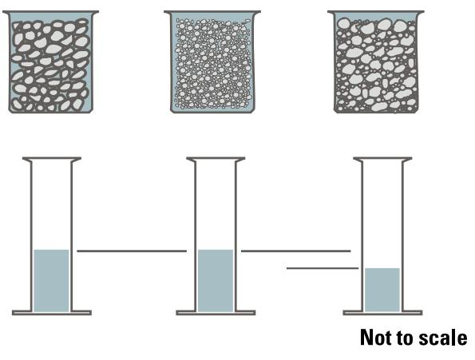

Aggregate Impact
Aggregate impact describes how the physical characteristics of aggregate particles, including their size distribution, shape, texture, and mineralogical composition, govern the behavior and performance of concrete mixtures. Because aggregates occupy the majority of a concrete’s volume, their specific properties directly determine the fresh-mix workability, water demand, and the strength and durability of the hardened material [1] [2]. The grading of aggregates dictates particle packing density, where well-graded distributions reduce voids and lower cement paste requirements while enhancing load-bearing capacity [1] [2]. Particle morphology influences consolidation efficiency, with rounded or sub-angular shapes typically improving interlock and reducing lubrication needs compared to elongated forms [2]. Mineralogical classification predicts long-term resistance to environmental stresses such as freeze-thaw cycling, chemical attack, and abrasion [1].
Sources (2)
Key findings
- The sheer volume of aggregates used in concrete pavements makes them a dominant factor in overall sustainability, despite the modest per-tonne cost and environmental footprint [1].
- Transportation of aggregates from quarry to jobsite often generates more energy use and greenhouse-gas emissions than mining and processing when trucks are used [1].
- Recycled construction waste materials, such as reclaimed asphalt pavement and recycled concrete aggregate, are increasingly employed for economic and environmental benefits but require careful evaluation to avoid adverse effects on fresh or hardened concrete [1].
- Relying on standard ASTM C33 coarse-aggregate gradations, which are often gap-graded, produces inferior airfield concrete performance compared to well-graded blends that include an intermediate-size aggregate [2].
- Aggregates occupy the largest volume of a concrete mixture and directly control durability, workability, finishability, and thermal behavior [2].
- A true well-graded aggregate with sufficient particles on all sieve sizes results in a matrix with good particle interlock, strength potential, volume of economy, workability, and extrusion integrity [2].
Aggregate Characteristics and Lifecycle Impacts
Aggregates serve as the primary volumetric component in concrete, acting as inert mineral filler bound by cement paste to form the bulk of pavement mass [1]. The physical and mineralogical characteristics of these particles directly govern fresh-mix workability, water demand, and the strength and durability of the hardened material [1] [2]. Proper grading ensures dense particle packing with reduced voids, while favorable particle shape and texture enhance interlock and minimize the cement paste required for lubrication [1] [2].
The following figure illustrates sieve analysis and the basic characteristics of gradations.
 Sieve analysis and the basic characteristics of gradations (adapted from ACPA 2015). [2]
Sieve analysis and the basic characteristics of gradations (adapted from ACPA 2015). [2]
The figure illustrates a sieve analysis apparatus on the left, showing how aggregate particles are separated by size through stacked screens. On the right, three distinct particle packing patterns are compared: uniformly-graded, gap-graded, and well-graded aggregates.
Research problem — The cumulative environmental footprint of concrete pavements is disproportionately driven by the energy and emissions associated with transporting aggregates, necessitating strategies to minimize transport distances alongside improvements in grading and durability [1]. Poor aggregate quality, including inadequate grading and insufficient durability, compels designers to increase cementitious content to meet performance requirements, thereby raising costs and carbon emissions while shortening the pavement’s service life [1]. Reliance on gap-graded or poorly graded aggregates introduces segregation risks and higher water demand, while handling operations degrade particle hardness and weaken the bond with cement paste, collectively compromising structural integrity and durability [2]. Insufficient quality control during aggregate acquisition, handling, and stockpile management allows these deficiencies to persist unchecked, leading to reduced workability, strength, and compliance with performance specifications [2].
State of the art — Current practice prioritizes material substitution with recycled construction waste and performance-oriented mix design to maximize aggregate volume and reduce cementitious binder content, supported by established guidance documents [1]. Aggregates are treated as engineered products requiring strict adherence to ASTM standards for gradation, shape, and deleterious materials to ensure durability and workability in pavement structures [2]. While these strategies lower embodied carbon, transportation remains a significant source of energy use and greenhouse gas emissions, often exceeding impacts from mining and processing [1].
Findings from the reports
- The sheer volume of aggregates used in concrete pavements makes them a dominant factor in overall sustainability, despite the modest per-tonne cost and environmental footprint [1].
- Transportation of aggregates from quarry to jobsite often generates more energy use and greenhouse-gas emissions than mining and processing when trucks are used [1].
- Recycled construction waste materials, such as reclaimed asphalt pavement and recycled concrete aggregate, are increasingly employed for economic and environmental benefits but require careful evaluation to avoid adverse effects on fresh or hardened concrete [1].
- Relying on standard ASTM C33 coarse-aggregate gradations, which are often gap-graded, produces inferior airfield concrete performance compared to well-graded blends that include an intermediate-size aggregate [2].
- Aggregates occupy the largest volume of a concrete mixture and directly control durability, workability, finishability, and thermal behavior [2].
- A true well-graded aggregate with sufficient particles on all sieve sizes results in a matrix with good particle interlock, strength potential, volume of economy, workability, and extrusion integrity [2].
Novelty & rigor — The methodology relies on established industry norms for optimizing aggregate grading to maximize volume and reduce cementitious content, rather than introducing a novel assessment technique [1]. Reproducibility is achieved through strict adherence to standard screening protocols for durability and reactivity, combined with precise mix proportioning to limit total cementitious materials while maintaining performance criteria [1]. The approach requires obtaining aggregates that meet specific gradation and hardness definitions, followed by standardized washing and sieve analysis procedures to verify a well-graded combined distribution suitable for airfield applications [2].
The following figure illustrates how this well-graded distribution maximizes aggregate volume by allowing smaller particles to fill voids between larger ones.

Comparison of aggregate particle size distributions and resulting void volumes. [1]The figure displays three beakers containing aggregates with different gradations: the left shows a coarse mix, the center shows a fine mix, and the right shows a well-graded mix where smaller particles fill the spaces between larger ones. Below each beaker is a graduated cylinder indicating the volume of water required to fill the voids, with the rightmost cylinder showing the lowest level corresponding to the well-graded aggregate.
Across the reviewed reports, aggregates are established as the dominant volumetric component of concrete pavements that critically governs physical performance metrics such as durability and workability while simultaneously driving significant lifecycle environmental impacts through transportation energy use. While recycled materials offer potential sustainability benefits, their adoption requires careful property evaluation to avoid compromising the well-graded particle interlock that is essential for structural integrity and performance. [1] [2]
Implications — Sustainable pavement design requires an integrated approach that prioritizes transportation mode optimization and rigorous engineering review of recycled materials to balance ecological gains with performance integrity [1]. Specifying well-graded aggregate blends early in the project lifecycle is essential to prevent segregation and ensure durability, necessitating dedicated lead times for sampling and approval [2]. Pragmatic quality-control practices must be implemented throughout acquisition and stockpiling to mitigate deleterious particles while acknowledging the economic constraints of complete removal [1] [2].
The following figure illustrates a conservative timeline for mixture and materials approval in a Department of Defense airport concrete paving project.
 Conservative timeline for mixture and materials approval for DOD airport concrete paving project. [2]
Conservative timeline for mixture and materials approval for DOD airport concrete paving project. [2]
The figure displays a Gantt chart illustrating the sequential testing phases required to approve aggregate materials, including freeze-thaw resistance, deleterious content, and alkali-silica reaction potential. This timeline demonstrates that the approval process for aggregates is a major piece of the critical path at start up, often taking as much as 7.25 months to complete before concrete mixture design commences. The figure highlights that testing and approval requirements are among the most time-consuming steps in prepaving activities, necessitating dedicated lead times to ensure material quality.
Limitations — The sustainability benefits of aggregates can be negated by high energy consumption and emissions from logistics, particularly when transport relies on trucks rather than more efficient modes like rail or barges [1]. Aggregate quality varies significantly even within single geological formations, requiring rigorous engineering assessments and performance verification for each new source to ensure it does not impair concrete properties [1]. Confidence in impact conclusions is limited by substantial lead times for testing and approval, the difficulty of securing materials that meet standard gradations without risking segregation or performance degradation, and poorly controlled handling losses during transport and stockpiling [2].
Evidence: 2 reports (2 primary)
Related concepts
In this hierarchy
- Parent: Aggregate Management
- Sibling: Aggregate Classification
- Sibling: Aggregate Management
- Sibling: Mixture Design
- Sibling: Quality Control
Related by shared evidence
- Aggregate Management — shares 2 reports
- Aggregate Management — shares 2 reports
- Cement Chemistry — shares 2 reports
- Cementitious Materials — shares 2 reports
- Concrete Cracking — shares 2 reports
- Concrete Mixture Design — shares 2 reports
- Concrete Production — shares 2 reports
- Concrete Standards — shares 2 reports
Similar topics
- Aggregate Management
- Quality Control
- Aggregate Classification
- Mixture Design
- Aggregate Management
- Pavement Types
- Design Considerations
- Concrete Standards
Source coverage
| Source | Aggregate Characteristics and Lifecycle Impacts |
|---|---|
| [1] | ✓ |
| [2] | ✓ |
References
- Integrated Materials and Construction Practices for Concrete Pavement: A STATE-OF-THE-PRACTICE MANUAL (2019)
- Best Practices Manual: Quality Control and Quality Acceptance of Concrete Airport Pavement (2025)
Feedback on this page